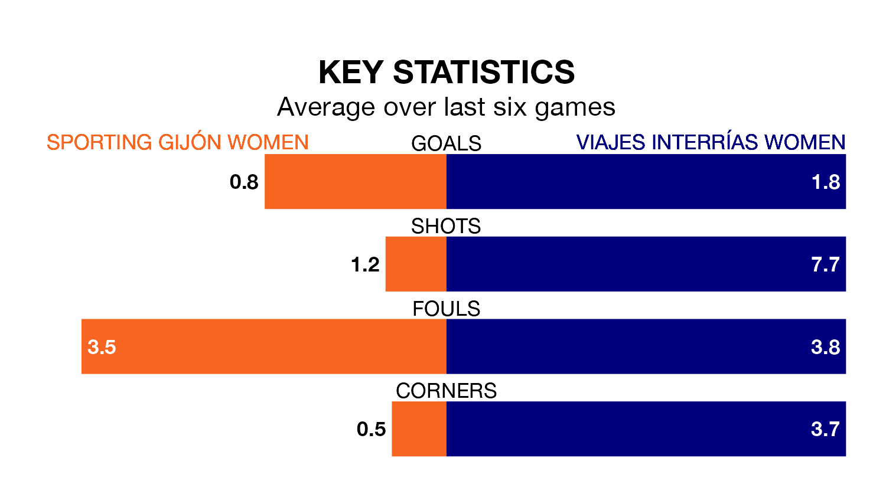

Sporting Gijón Women host Viajes Interrías Women in Sunday's early match looking to bounce back from defeat last time out in the Segunda Federación Femenina.
Sporting, who sit zero in the league after 19 games, fell to a 1-0 away defeat to Real Oviedo Women on February 4.
They face a Viajes Interrías side who picked up a win in their last match, a 4-3 victory against Real Sociedad II Women, and who sit second in the table.
With 36 goals in 19 games so far this season, Viajes Interrías are the league's joint-second-highest scorers with 1.9 goals per game. And they are conceding fewer than average, letting in 21 goals at a rate of 1.1 per game.
Sporting, meanwhile, are below average scorers, with 1.0 goal per game, compared to a league average of 1.3. They have conceded 1.7 goals per game.
The hosts are in bad form in the Segunda Federación Femenina, with one win and five losses from their last six games.
With four wins and two losses over that period, the away team's form is much better – they have taken 12 points from 18, compared to Sporting's three.
Updated: 11:43 (UTC), 08/02/24